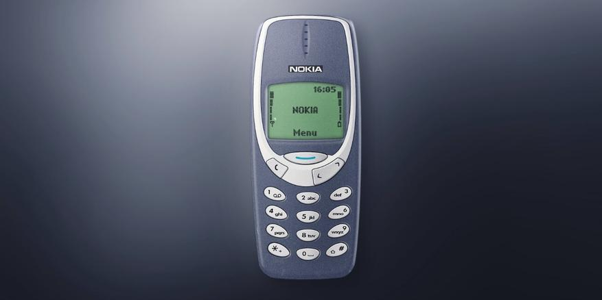
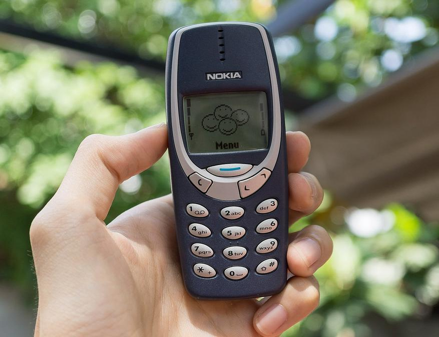

Многие называют этот телефон легендарным. Да и по количеству интернет - мемов он лидирует. А еще 3310 был очень популярен на мировом рынке. Во времена его активного производства (2000-2005 года) было продано 126 миллионов штук. Это успех финской компании. В чем же секрет обаяния этой кнопочной модели? - Давайте разбираться.
Когда говорят о кнопочных телефонах, то чаще всего вспоминают именно Nokia 3310. Сейчас сложился образ 3310, как неубиваемого и очень прочного телефона, не чета современным хрупким смартфонам, а так же вспоминают его долгое время автономной работы.
Но не только это было решающим фактором в завоевании популярности 3310 на рынке 22 года назад.
Коммуникация с пользователем и эргономика в модели 3310 была довольно передовой на момент выпуска. Дисплей был контрастный с зеленной подсветкой, крупные тактильно заметные кнопки управления вызовом и навигацией. Даже в перчатках телефон уверенно управлялся. Хотя меня в свое время напрягало отсутствие отдельной кнопки сброса вызова.
Еще запоминающимися моментами в модели были индивидуальные рингтоны на контакты в списке абонентов. И фирменный синтезатор мелодий, он был сложным в освоении, но давал еще 7 своих мелодий. Раньше мелодии на телефоне (и заставки на экран) были особым способом выделится, сейчас это уже ушло в прошлое.
Когда говорят о кнопочных телефонах от Nokia, конечно, вспоминают игру "Змейка". Просто и гениально, по другому и не скажешь. Я сам подолгу "залипал" в нее, до появления мессенджеров в телефонах.
Прочность корпуса и выносливость аккумулятора модели 3310 многие оценили позднее, когда появились смартфоны с сенсорными экранами. Аккумулятор у Нокии (900 мАч) можно было заряжать раз в неделю, а еще он был съемным. Такое в современных телефонах табу, производителям не нужна надежность.